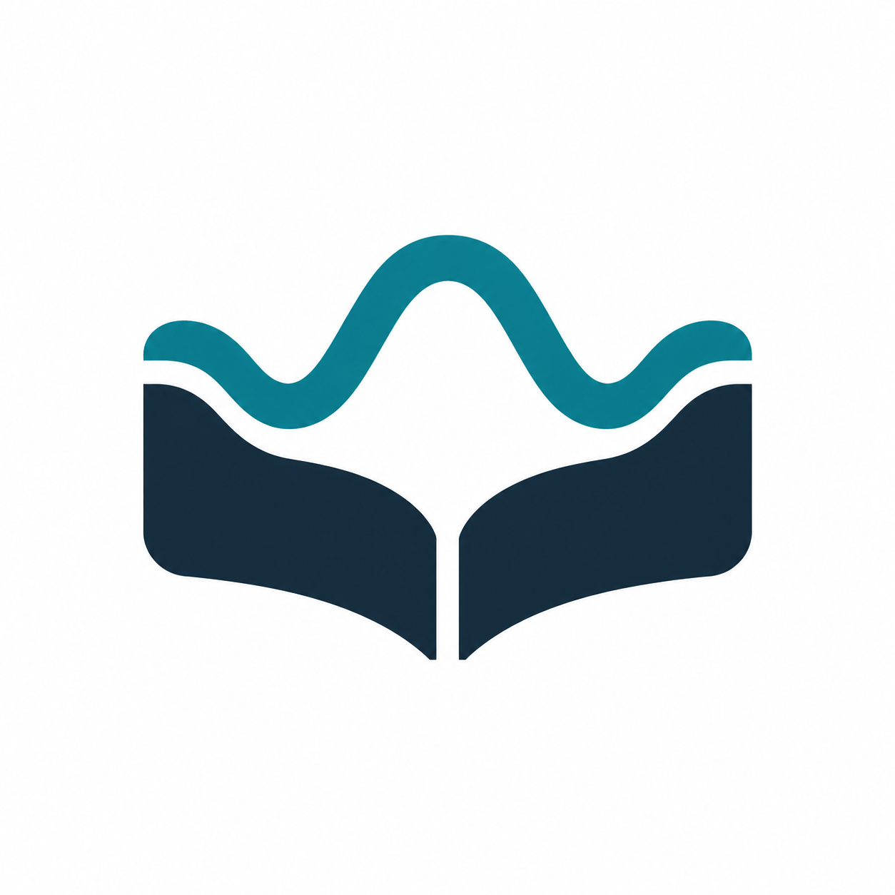
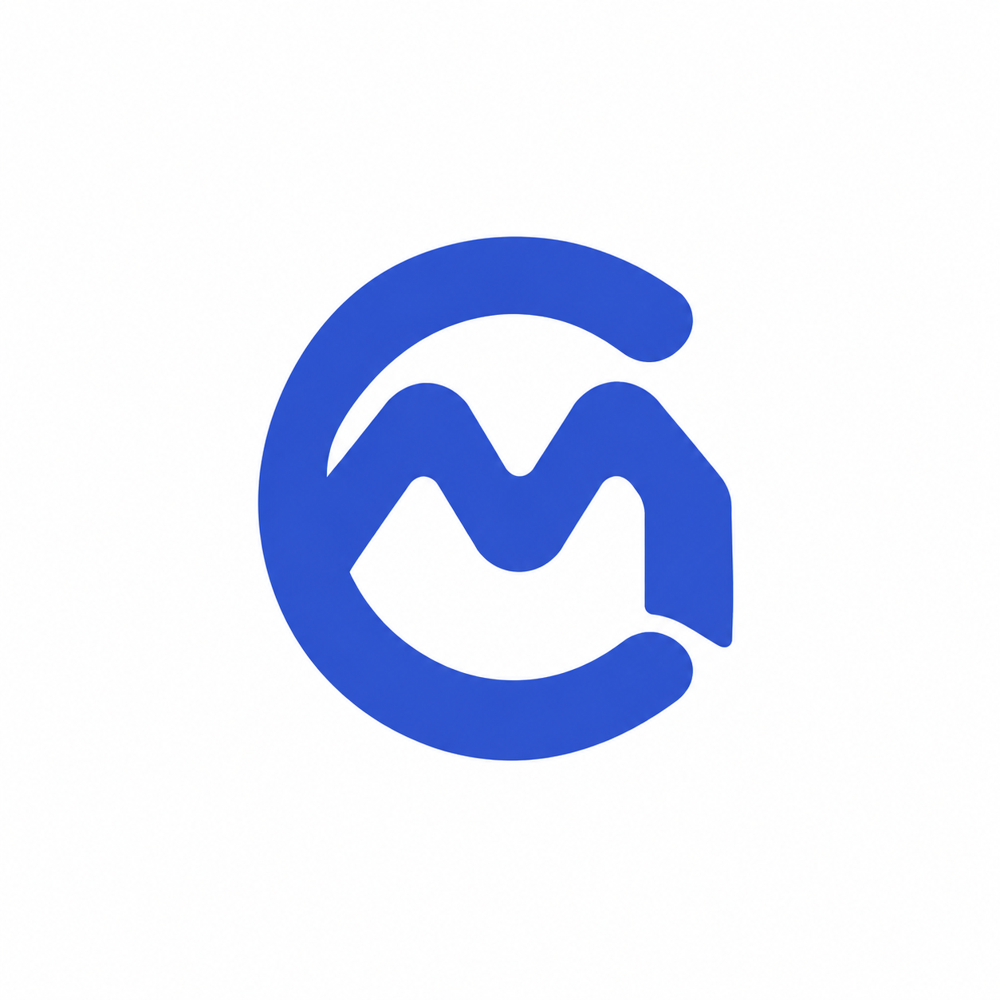
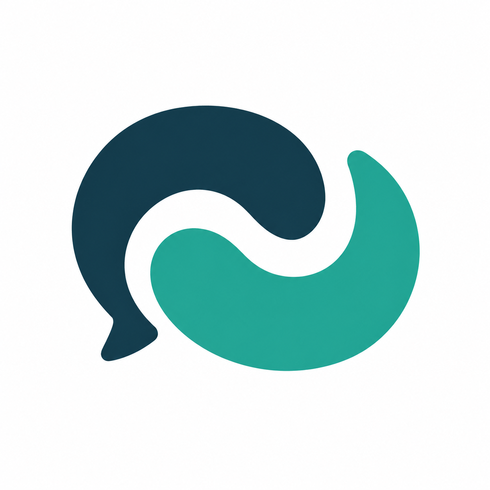
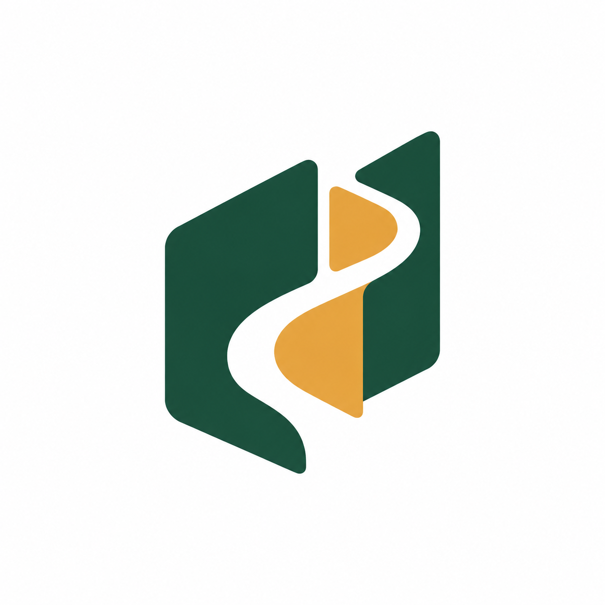
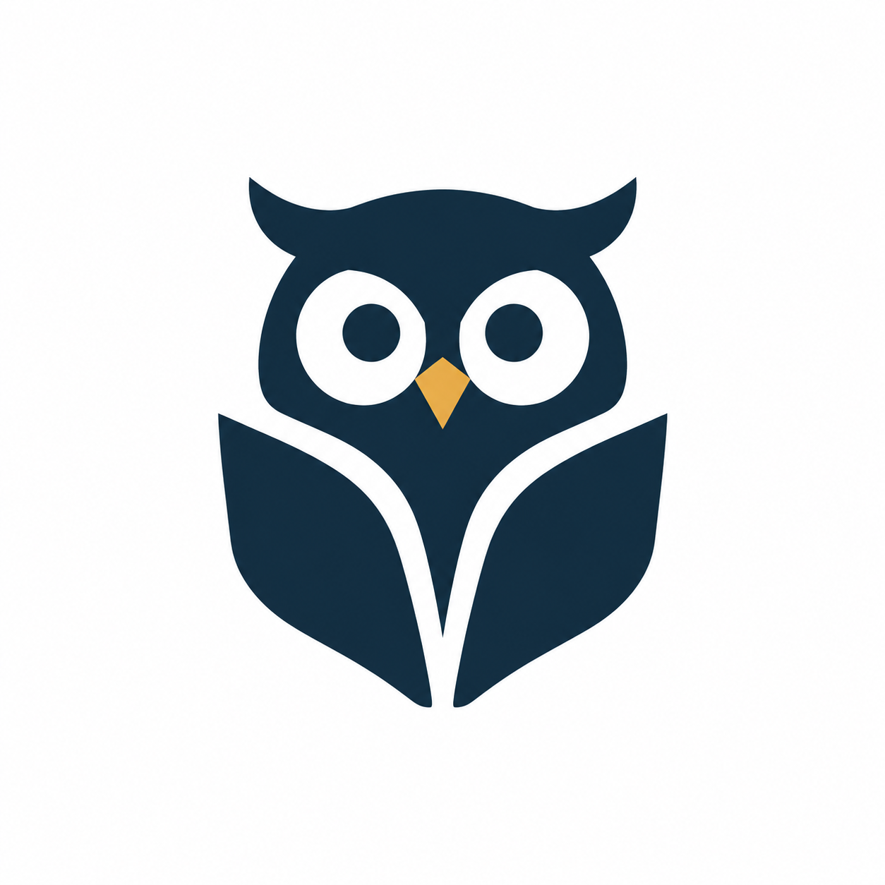
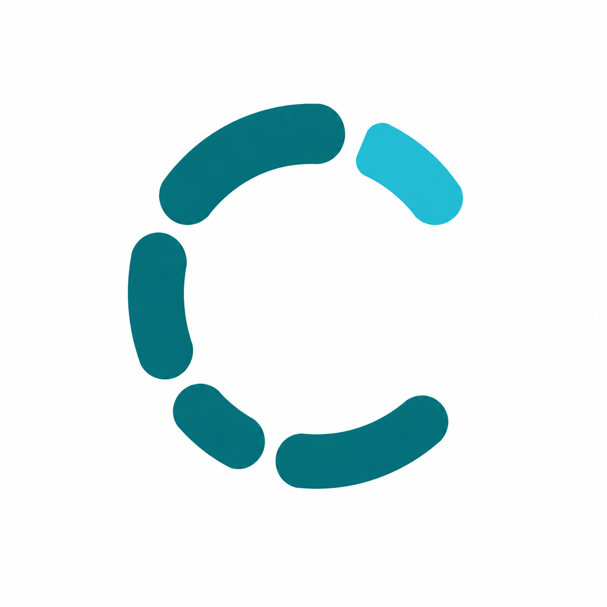

围绕信号与系统、探索式学习与 AI 陪伴，从六种不同符号出发。点击图片放大，比较形状、辨识度与品牌气质，再选择你最有感觉的一款。

Signal Pages
展开的书页与正弦波融合，直接表达课程与信号实验，延续项目的深蓝和青绿色。

CM Resonance
将 C 与 M 设计成连续的几何字母标，兼具学习路径与波形节奏，适合极简品牌。

Learning in Sync
一对相互呼应的对话形状构成开放环，突出 AI 陪伴、交流与同频学习。

Path to Understanding
用向上的连续路径与页角表达理解、实验、练习的成长过程，风格温暖克制。

The Curious Owl
以猫头鹰做有记忆点的学习伙伴，翅膀暗含书页，兼顾亲和力与应用图标辨识度。

Spectrum Window
以采样条带构成开放的 C 形窗口，突出信号分析与探索，偏现代工具型品牌。